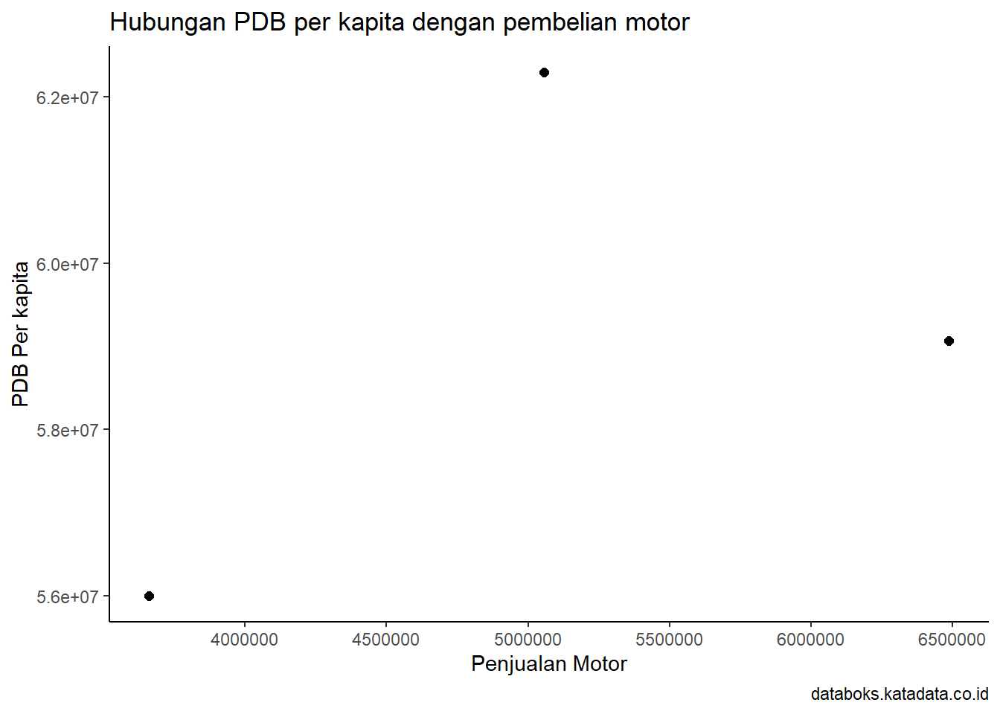

library("readxl")Warning: package 'readxl' was built under R version 4.3.2dat<-read_excel("data beli motor.xlsx")
head(dat)# A tibble: 3 × 2
x y
<dbl> <dbl>
1 6487460 59065348
2 3660616 56000000
3 5057516 62300000Metode Penelitian Politeknik APP Jakarta

Pertumbuhan ekonomi suatu negara atau daerah tidak hanya dapat diukur melalui indikator makroekonomi seperti Produk Domestik Bruto (PDB) secara keseluruhan, tetapi juga dapat dilihat melalui perubahan dalam perilaku konsumen. Kesejahteraan ekonomi masyarakat tercermin dalam pola konsumsi dan keputusan pembelian yang diambil oleh individu. Dalam konteks Indonesia, salah satu indikator konsumsi yang signifikan adalah kepemilikan sepeda motor.
Sepeda motor telah menjadi bagian integral dari kehidupan sehari-hari masyarakat Indonesia, memberikan kontribusi besar terhadap mobilitas dan konektivitas. Peningkatan jumlah sepeda motor yang dimiliki oleh masyarakat dapat diartikan sebagai cerminan dari perubahan gaya hidup, kebutuhan mobilitas, dan kemampuan finansial individu. Oleh karena itu, memahami hubungan antara kesejahteraan ekonomi masyarakat, diwakili oleh PDB per kapita, dengan tingkat pembelian sepeda motor menjadi esensial.
Melihat tren pertumbuhan ekonomi yang diiringi dengan peningkatan kepemilikan sepeda motor, dapat memberikan wawasan tentang dampak perekonomian terhadap keputusan konsumen dalam memenuhi kebutuhan transportasi pribadi. Kajian ini juga relevan untuk memahami dinamika pasar sepeda motor, sejauh mana pasar tersebut merespons perubahan ekonomi, dan bagaimana kebijakan pemerintah dapat merangsang pertumbuhan sektor otomotif.
Dengan menggali hubungan antara PDB per kapita dan pembelian sepeda motor, penelitian ini akan memberikan sumbangan pengetahuan yang berharga bagi pengambil kebijakan, peneliti, dan pelaku industri. Analisis ini diharapkan dapat memberikan landasan strategis untuk pengembangan kebijakan ekonomi dan industri otomotif yang lebih adaptif dan berkelanjutan di Indonesia.
Penelitian ini akan difokuskan pada analisis hubungan antara Produk Domestik Bruto (PDB) per kapita masyarakat dan pembelian sepeda motor di konteks Indonesia. Ruang lingkup penelitian mencakup beberapa aspek penting:
Wilayah Geografis:
Penelitian akan memusatkan perhatian pada kondisi ekonomi dan pasar sepeda motor di Indonesia. karena ingin melihat bagaimana perilaku masyrakat di indonesia
Rentang Waktu:
Rentang waktu penelitian akan mencakup periode yang cukup untuk mengidentifikasi tren jangka panjang. Data yang relevan akan dikumpulkan dan dianalisis untuk menilai perubahan seiring waktu, dengan fokus pada tahun-tahun terkait dengan fluktuasi signifikan.
bertujuan untuk menganalisis korelasi antara Produk Domestik Bruto (PDB) suatu daerah atau negara dengan tingkat pembelian sepeda motor oleh masyarakat. Dengan meneliti faktor-faktor ekonomi dan sosial yang mempengaruhi keputusan pembelian, seperti pendapatan per kapita dan struktur demografi, penelitian ini bertujuan memberikan pemahaman yang lebih baik tentang hubungan antara aspek ekonomi dan perilaku konsumen dalam konteks industri sepeda motor. Manfaatnya mencakup kontribusi terhadap pengembangan kebijakan ekonomi dan strategi pemasaran industri sepeda motor, memberikan wawasan bagi pembuat kebijakan, pengusaha, dan peneliti ilmiah, serta potensi dampak sosial dan ekonomi yang positif. Selain itu, penelitian ini diharapkan dapat menjadi dasar untuk penelitian lanjutan dalam bidang ini
https://databoks.katadata.co.id/datapublish/2023/02/06/pendapatan-penduduk-indonesia-tumbuh-1396-menjadi-rp71-juta-per-tahun-pada-2022
https://dataindonesia.id/otomotif-transportasi/detail/data-penjualan-sepeda-motor-di-indonesia-secara-tahunan-20132023
| tahun | Pendapatan Per kapita | Penjualan motor |
|---|---|---|
| 2019 | 59065348 | 6,487,460 |
| 2020 | 56000000 | 3,660,616 |
| 2021 | 62300000 | 5,057,516 |
penelitian ini menggunakan data PDB dari Databoks dan dataindonesia
library("readxl")Warning: package 'readxl' was built under R version 4.3.2dat<-read_excel("data beli motor.xlsx")
head(dat)# A tibble: 3 × 2
x y
<dbl> <dbl>
1 6487460 59065348
2 3660616 56000000
3 5057516 62300000library("ggplot2")Warning: package 'ggplot2' was built under R version 4.3.2library("dplyr")Warning: package 'dplyr' was built under R version 4.3.2
Attaching package: 'dplyr'The following objects are masked from 'package:stats':
filter, lagThe following objects are masked from 'package:base':
intersect, setdiff, setequal, unionggplot(data=dat,aes(x=x,y=y))+
geom_point(color="black",size=2)+
labs(title="Hubungan PDB per kapita dengan pembelian motor",
x="Penjualan Motor",
y="PDB Per kapita",
caption="databoks.katadata.co.id")+
theme_classic()
Metode yang dipilih adalah regresi univariat atau Ordinary Least Square (OLS) dengan 1 variabel independen. Penelitian ini merbaksud mencari hubungan Pendapatan Per kapita masyrakat Indonesia dengan nilai pembelian sepeda motor. Spesifikasi yang dilakukan adalah:
\[ y_{t}=\beta_0 + \beta_1 x_t+\mu_t \] di mana \(y_t\) adalah pendaptan per kapita dan \(x_t\) adalah pembelian sepeda motor.
Pada bagian ini dapat ditampilkan data dan visualisasi data yang telah dikumpulkan.
Hasil regresinya adalah
library("readxl")
dat<-read_excel("data beli motor.xlsx")
head(dat)# A tibble: 3 × 2
x y
<dbl> <dbl>
1 6487460 59065348
2 3660616 56000000
3 5057516 62300000reg1<-lm(y~x,data=dat)
summary(reg1)
Call:
lm(formula = y ~ x, data = dat)
Residuals:
1 2 3
-1576363 -1613653 3190016
Coefficients:
Estimate Std. Error t value Pr(>|t|)
(Intercept) 5.369e+07 1.016e+07 5.284 0.119
x 1.071e+00 1.955e+00 0.548 0.681
Residual standard error: 3907000 on 1 degrees of freedom
Multiple R-squared: 0.231, Adjusted R-squared: -0.5381
F-statistic: 0.3003 on 1 and 1 DF, p-value: 0.6808Dari hasil analisis, terlihat bahwa model regresi yang diterapkan tidak secara signifikan menjelaskan hubungan antara variabel independen dan dependen pada data pembelian motor. Tingginya nilai p pada intercept dan koefisien x, bersama dengan nilai R-squared yang rendah, menunjukkan adanya ketidaksesuaian model dengan data atau kebutuhan untuk melakukan penyesuaian guna meningkatkan kualitasnya. Oleh karena itu, disarankan untuk melakukan evaluasi ulang terhadap model atau menambahkan variabel lain guna meningkatkan kemampuan model dalam menjelaskan variasi dalam data.
Kusnandar, V. B. (2023). Nilai dan Pertumbuhan PDB per Kapita Penduduk Indonesia (2013-2022). Databoks. https://databoks.katadata.co.id/datapublish/2023/02/06/pendapatan-penduduk-indonesia-tumbuh-1396-menjadi-rp71-juta-per-tahun-pada-2022
Mustajab, R. (2024). Data Penjualan Sepeda Motor di Indonesia Secara Tahunan (2013-2023). Databoks. https://dataindonesia.id/otomotif-transportasi/detail/data-penjualan-sepeda-motor-di-indonesia-secara-tahunan-20132023